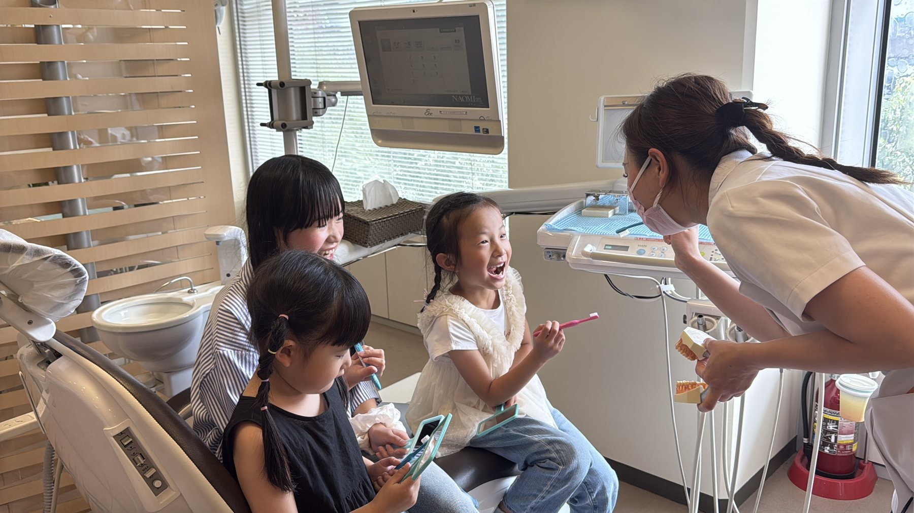
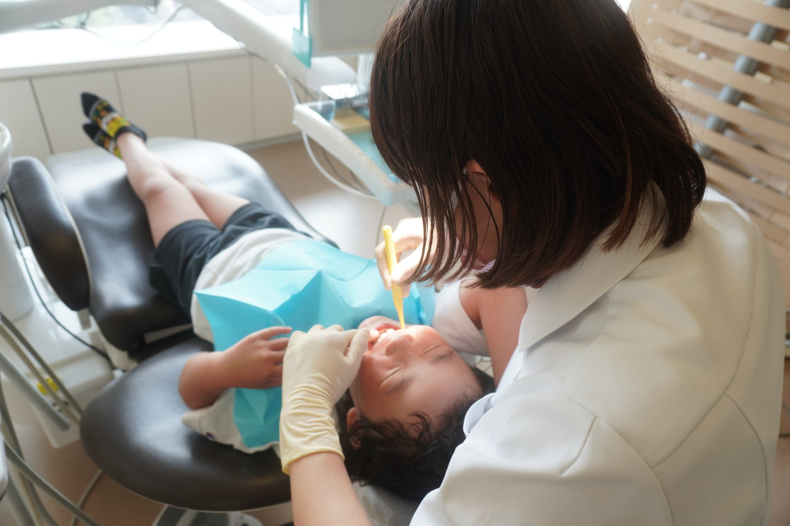

中村歯科医院の診療のご案内についてのご案内です。
虫歯や歯周病など、お口の基本的な疾患に幅広く対応して口腔の疾患を全て網羅して治療を行います。虫歯は初期（C0）から重度（C4）まで、段階に応じた治療を行い、神経まで進行した場合には根管治療により歯の保存を目指します。
また、3Mix-MP法という3種類の抗菌薬を用いた新しい治療法を導入しており、歯を削る量を最小限に抑えながら虫歯や根尖病変の治療が可能です。
歯周病治療では、歯科医師と歯科衛生士が連携し、スケーリングやルートプレーニング、ブラッシング指導を通じて進行を抑制。セルフケアとプロケアの両立を重視しています。
お子さまの成長に合わせた診療を行います。虫歯予防、フッ素塗布、シーラント、ブラッシング指導などを通して、将来の健康な歯を育てます。
幼稚園・学校の校医経験を持つ歯科医師が在籍し、痛くない・怖くない歯科体験を大切にしています。定期検診を習慣にすることで、生涯の歯の健康を守る基盤をつくります。

当院では「定期健診」により、小さいときから生涯にわたって、歯と口の衛生を守り、痛くならないようにしていくことが、生涯自分の歯で豊かな生活をおくるために一番効果であると思っております。
少しの不注意で歯周炎、虫歯を進行さし歯を抜かなければならないことは、生涯取り返しのできないことではないでしょうか？
「定期健診」では、歯科医師・歯科衛生士が普段ブラッシングでは取れない汚れをクリーニングしたり、口腔清掃指導、予防剤（フッ素）塗布、レントゲン写真による検査などを行います。
「定期健診」の間隔は、通常３ヶ月〜６ヶ月で行いますが、その方の症状によって１ヶ月〜２ヶ月で行う場合もあります。

PMTC（専門家による機械的歯面清掃）を中心に、虫歯・歯周病を未然に防ぐための予防ケアを提供しています。
歯科衛生士による丁寧なクリーニング、フッ素塗布、歯茎マッサージにより、清潔で健康な口腔環境を保ちます。定期検診を通じて、長期的なお口の健康維持をサポートします。
RESERVATION & CONTACT
診療時間 9:30〜13:00 ／ 15:00〜19:00 ※土曜午後は15:00〜17:00・日曜・祝日休診